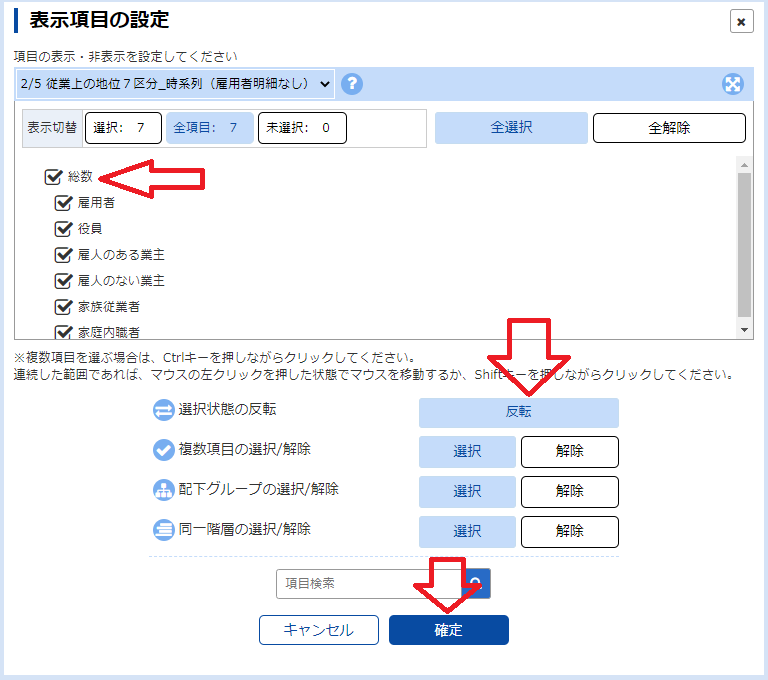
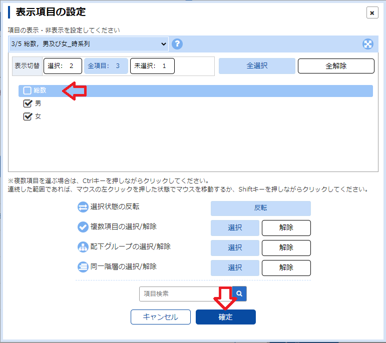
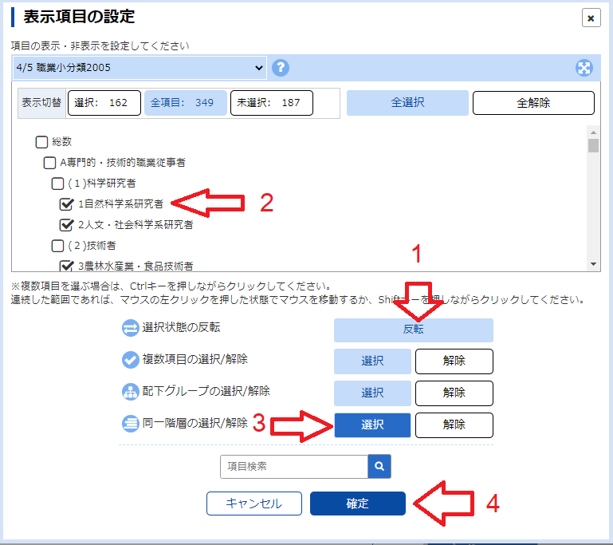
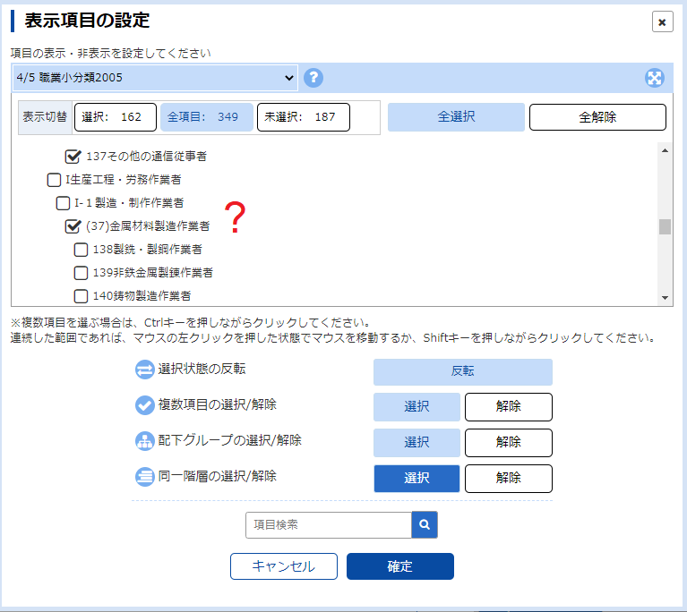
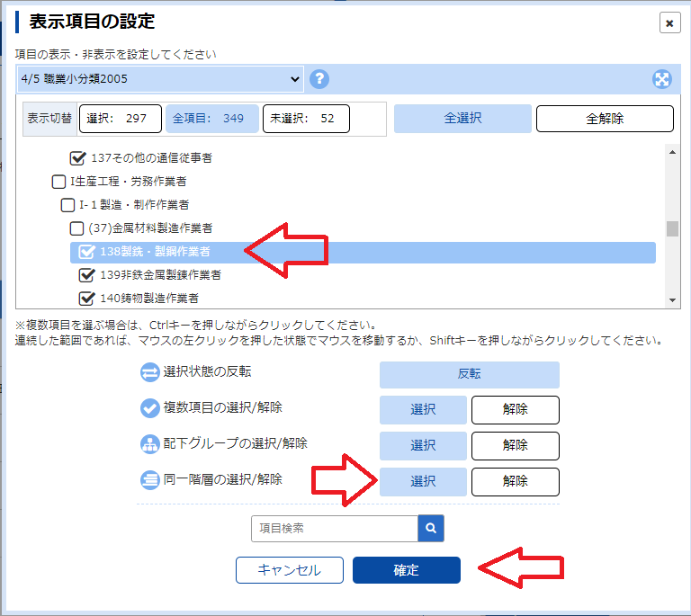
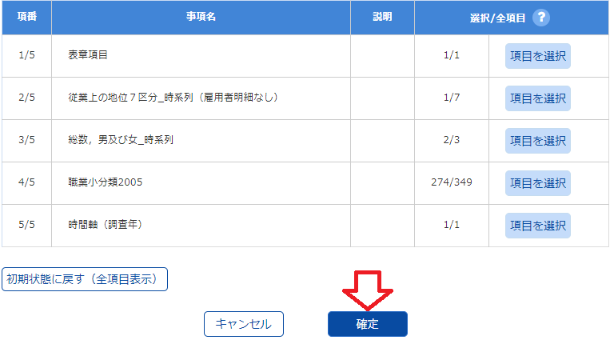
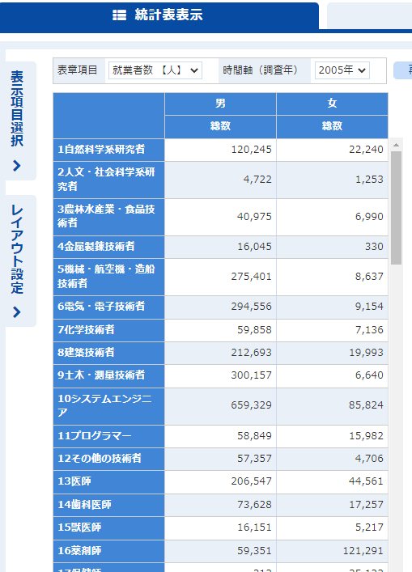
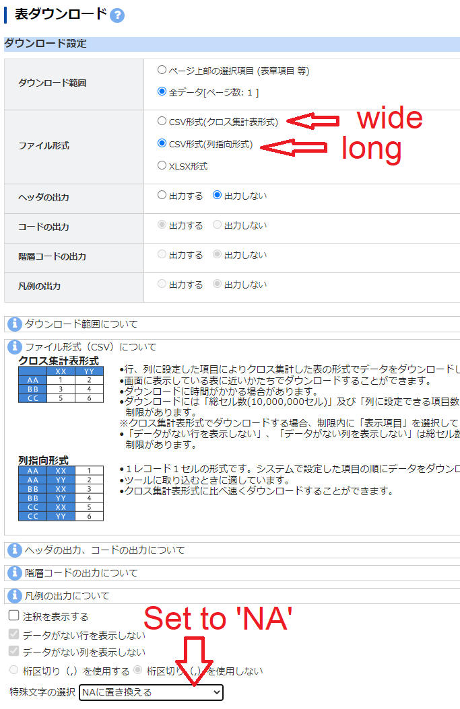

Several time series datasets covering labor force status and employment are the
e-Stat website
.
The database giving national population totals by minor occupation, employment status and gender for persons
aged 15 and older are in Table 9 at the very bottom of that page. The link takes you to
a list of
datasets for censuses carried out between 1985 and 2015.
Time series dataset list.
Clicking on the DB link displays the full table. The left column lists the occupations at the major, mid and minor
class levels. The next set of 7 columns gives population numbers by occupation status for both genders: total,
employees, officers, self-employed with employees, self-employed without employees, unpaid employees of family
businesses and household workers. The next
set of 7 columns gives the numbers for males followed by the numbers for females. To select items for download,
click in the red box at upper left.
Occupation table.
The data item selection panel has 5 rows in this case. For this task, I will select only the total occupation status numbers
(row 2), male and female (row 3), and the minor occupations (row 4). Click on the button at the right of row 2.
Data item selection.
The popup displays with all items selected. Deselect all by clicking on the
reverse button at lower right, then select totals as indicated by the arrow at left.
Finally click on the confirm button at bottom.

Occupation status item selection.
Repeat this to deselect gender by clicking on the button at the right of row 3. Deselect
the top item and click on confirm.

Gender selection.
Selecting occupations is a bit more complicated. When the occupation panel is selected by clicking
on the button in row 4 of the data item selection panel, the panel displays a hierarchical tree
of the occupation catagories. Each level can be selected with two clicks by selecting one member
of that level (1), then clicking on the button at 2. This selects all in that level. (You can
deselect all in the level by clicking on the button to the right of the select button.) However, see
the TIP below for a quirk found for some years.

Occupation selection (panel 1).
TIP: For years 2005 and 2010, the submajor classes I-1, I-2 and I-3 are inserted under
their major class I. This pushes the mid and minor layers down one level, so that selecting all of the
minor categories at top select the mid layer under I (panel 2).

Occupation selection (panel 2).
To correctly select the minor layers under I, you can select the underlying minor layers as above, but
have to deselect the mid layer item by item.

Occupation selection (panel 3).
After completing these selections, we have 1/7 occupation status item, 2/3 gender items and 274/349 minor level occupations.
Reflecting slightly varying occupation classifications, this latter number may vary by census year.
Click on "confirm (確認)" to complete and close this panel.

Confirm data item selection
The main table now has male and female totals by minor occupation. Click on the download button at upper right
.

Main table after data item selection
The download format panel lets you select wide CSV, long CSV, or wide XLSX format. Wide CSV is the default. Also,
the default symbol for missing data is a dash '-'. This can be changed to 'NA' in the listbox near the bottom.
Click on the download button at bottom
to save your selected data.

Download format panel
The resulting dataset can be downloaded here.
(If your browser attempts to retype this as an xls file, force the type back to csv.) The next page
on preprocessing the data uses a similarly
downloaded file with 2000 data.